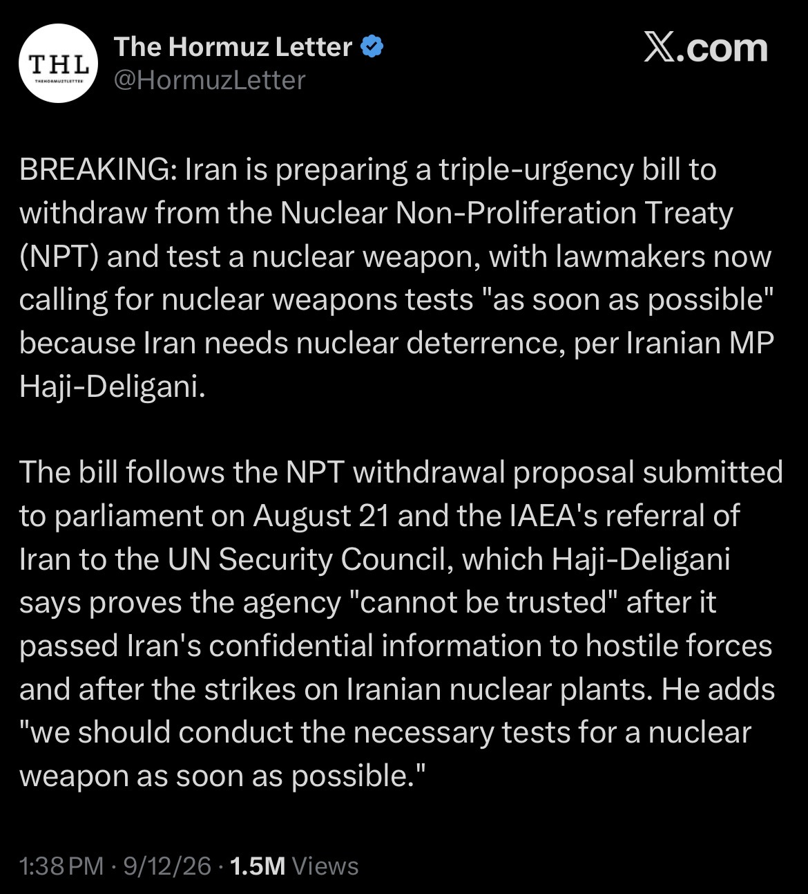

The International Atomic Energy Agency's board referred Iran to the United Nations Security Council over concerns surrounding Iran's nuclear program. The development marked a significant escalation in the long-running international dispute over Iran's nuclear activities.
This record preserves reporting and social-media material documenting the situation as it unfolded on September 13, 2026.
Source
Related Social Media Records
Screenshots from X documenting public discussion and reaction to the event.
